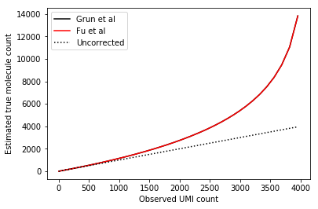
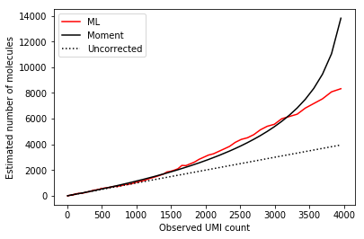
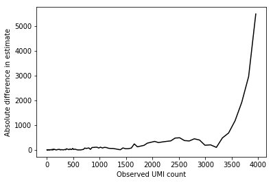
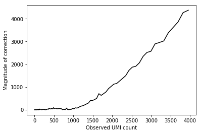
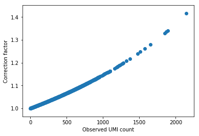

Estimating transcript count from UMI count
Introduction
The labelling of molecules by UMIs is stochastic, such that it is not guaranteed that every molecule present in a sample will be labelled by a UMI. This was previously termed collision probability.
Here, we perform the following analyses:
- We show that the maximum likelihood estimator of the number of transcripts does not agree with previously published estimators
- We show that applying the correction on our data will change the majority of observations by less than 1%
Moment estimators
Consider a single gene, and let \(x\) be the observed number of unique UMIs, \(K\) be the maximum possible number of UMIs (which depends only on the length of the UMIs), and \(n\) be the true molecule count. Fu et al 2011 suggest a moment estimator for \(n\):
\[ E[x] = K\left[1 - \left(1 - \frac{1}{K}\right)^n\right] \]
\[ \hat{n} = \frac{\ln(1 - x/K)}{\ln(1 - 1/K)} \]
Grun et al 2014 give an approximation to this formula:
\[ \hat{n} \approx -K \ln\left(1 - \frac{x}{K}\right) \]
Look at the implied number of transcripts for each possible value of UMI, according to each of the formulas:
K = 4 ** 6 grid = np.logspace(1, 6, num=200, base=4)[:-1] plt.clf() plt.plot(grid, -K * np.log(1 - grid / K), color='k', label='Grun et al') plt.plot(grid, np.log(1 - grid / K) / np.log(1 - 1 / K), color='r', label='Fu et al') plt.plot([grid.min(), grid.max()], [grid.min(), grid.max()], color='k', ls='dotted', label='Uncorrected') plt.legend() plt.xlabel('Observed UMI count') plt.ylabel('Estimated true molecule count')
Text(0,0.5,'Estimated true molecule count')

Tabulate the percentiles of absolute difference between the two formulas.
pd.Series(-K * np.log(1 - grid / K) - np.log(1 - grid / K) / np.log(1 - 1 / K)).apply(abs).describe()
count 199.000000 mean 0.112062 std 0.238900 min 0.000489 25% 0.002746 50% 0.015597 75% 0.094526 max 1.687368 dtype: float64
Plot the absolute difference between uncorrected and corrected:
plt.clf() plt.plot(grid, np.log(1 - grid / K) / np.log(1 - 1 / K) - grid) plt.xlabel('Observed UMI count') plt.ylabel('Magnitude of correction')
Text(0,0.5,'Magnitude of correction')

Maximum likelihood estimator
We also estimate \(n\) via maximum likelihood assuming (Fu et al 2011):
\[ x \sim \mathrm{Bin}(K, 1 - (1 - 1 / K)^n) \]
def ml_binom(x, K, **kwargs): """Maximum likelihood estimator of n""" x = np.atleast_1d(x) def neg_llik(n): p = 1 - pow(1 - 1 / K, n) return -(x * np.log(p) + (K - x) * np.log(1 - p) + sp.gammaln(K + 1) - sp.gammaln(x + 1) - sp.gammaln(K - x + 1)).sum() res = so.minimize(neg_llik, x0=x, bounds=[(1, None) for _ in x], **kwargs) return res.x
grid = np.logspace(1, 6, num=200, base=4)[:-1] nhat = ml_binom(grid, 4 ** 6)
plt.clf() plt.plot(grid, nhat, color='r', label='ML') plt.plot(grid, np.log(1 - grid / K) / np.log(1 - 1 / K), color='k', label='Moment') plt.plot([0, grid.max()], [0, grid.max()], ls='dotted', color='k', label='Uncorrected') plt.legend() plt.xlabel('Observed UMI count') plt.ylabel('Estimated number of molecules')
Text(0,0.5,'Estimated number of molecules')

plt.clf() plt.plot(grid, abs(nhat - np.log(1 - grid / K) / np.log(1 - 1 / K)), color='k') plt.xlabel('Observed UMI count') plt.ylabel('Absolute difference in estimate')
Text(0,0.5,'Absolute difference in estimate')

Plot the difference between ML-corrected and non-corrected:
plt.clf() plt.plot(grid, abs(nhat - grid), color='k') plt.xlabel('Observed UMI count') plt.ylabel('Magnitude of correction')
Text(0,0.5,'Magnitude of correction')

Impact on real data analysis
Look at the density of observed UMI counts:
keep_samples = pd.read_table('/project2/mstephens/aksarkar/projects/singlecell-qtl/data/quality-single-cells.txt', index_col=0, header=None) keep_genes = pd.read_table('/project2/mstephens/aksarkar/projects/singlecell-qtl/data/genes-pass-filter.txt', index_col=0, header=None)
bins = np.zeros(K) for chunk in pd.read_table('/project2/mstephens/aksarkar/projects/singlecell-qtl/data/scqtl-counts.txt.gz', index_col=0, chunksize=100): chunk = chunk.filter(items=keep_genes[keep_genes.values.ravel()].index, axis='index').loc[:,keep_samples.values.ravel()] value, count = np.unique(chunk, return_counts=True) bins[value] += count
plt.clf() plt.hist(np.arange(1, np.argmin(bins)), bins=100, weights=bins[1:np.argmin(bins)], density=True) plt.xlabel('Observed UMI count') plt.ylabel('Density')
Text(0,0.5,'Density')

Plot the correction factor for the range of observed values.
grid = np.where(bins > 0)[0][1:] plt.clf() plt.scatter(grid, np.log(1 - grid / K) / np.log(1 - 1 / K) / grid) plt.xlabel('Observed UMI count') plt.ylabel('Correction factor')
Text(0,0.5,'Correction factor')
